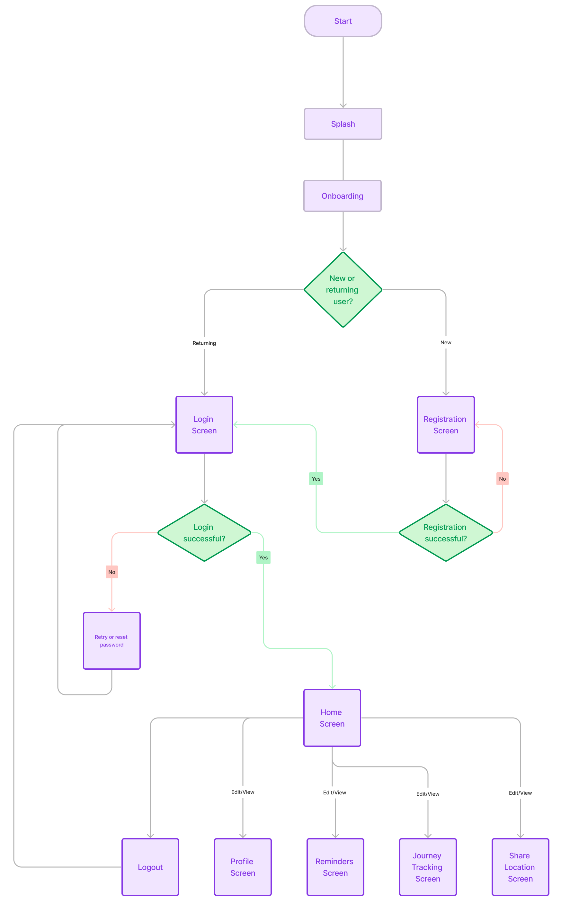

100 Days
UI Challenges
Welcome! This is a space where I dive into mini design projects sourced fromdailyui.coto sharpen my UI/UX skills. What makes these challenges unique is my end to end involvement—I not only design but also code!
I will take you through my entire design process, i.e, ideation, wireframes, interactive prototypes, and code! Join me on this awesome journey, where each challenge propels me towards mastering the art of UI/UX design.
1. Sign-up
"Create a sign up page, modal, form, or app screen related to signing up for something. It could be for a volunteer event, contest registration, a giveaway, or anything you can image," Daily UI
I created a signup page for Green Collective (GC), a fictitious organization that is hosting a volunteer event called 'ECOnnect'. The organization's goal is to raise awareness for sustainable energy practices.
Design Toolkit: Figma & React.js

Design choices
•Responsive Design: I designed for both mobile and desktop to ensure there is usability and consistency regardless of the device used for signup.
•Company Logo: I ensured that the company’s logo was present on the signup page to establish brand identity and foster trust among users.
•Simple Short Form: Since a long, sign-up form can be time-consuming, create more opportunities for confusion, and overall dissuade users from signing up, I decided to create a simple form so users are able to quickly and comfortably sign up.
•Input Field (Focus): This indicates to users which field is currently active and ready for their input. This also helps to prevent confusion and error entries.
•Password Eye Icon: Masking the user’s password by default enhances trust in the website, and offering the option to toggle between show and hide provides users with greater autonomy.
•Instant Validation: Providing users with instant feedback validation in the input fields as they enter information provides guidance for accurate data entry.
•Button: I designed the button to be inactive on page load so that users are aware that each text field must be accurately filled so that the ‘register’ button can be active.
•Sign In vs Sign Up: I opted for the word ‘register’, instead of sign in or sign up since the words are so similar and can easily confuse users.
•Login Option on Sign Up Form: Adding a login button on the sign-up page provides a direct and convenient way for already registered users to access their accounts, enhancing user satisfaction.
•Single Sign-On (SSO) Technology: Allowing users to sign up using an alternative account provides an even faster sign up process as users do not need an additional password. I decided to use Google as it is among the most popular social sign-on sites.
•Checkbox - Join Green Collective (GC) Community: By incorporating a checkbox in the registration form, I prioritize transparency and user autonomy while also offering the company an opportunity to convert potential new members. This approach ensures a balanced design that aligns with both company goals and user-centered principles.
•Animation: The light bulb animation, which allows users to directly turn the switch on or off, was designed to not only capture users' attention but also to symbolize that everyone can actively contribute to a more sustainable way of living; and choosing to participate in this voluntary event is a step towards transforming and improving our world.
•Email Verification Page: After users click the sign up button, I wanted to communicate to them that the company values data security. It was, therefore, important that I create an email verification page that notifies users about a verification link that is sent to their emails to ensure they provided an accurate email address and prevent erroneous registrations. Also, a resend email link option is included for user convenience, since delivery issues could arise.
Challenges
A notable challenge for me was finding the balance between simplicity and informativeness. However, having read articles that provided detailed information on creating a user-friendly sign-up form, it became clearer to me that a concise form was important for quick user engagement. I, therefore, made sure that only the necessary input fields were included.
Additionally, the password eye icon and validation were more challenging than I had anticipated. While I wrote a rough draft of my plan, being in the midst of creating the components made me realize that some input fields required more variations and interactions to properly implement my design concept. For example, I wanted users to have the option to see the error they made, while having a guide that could help them input valid data. I also needed the guide to be visible only when needed. I realized this required 8 variations, careful selection of interactions and timing.
Lessons Learned
One of the features I was eager to use was the boolean variable feature. However, I was ‘knee-deep’ in my design process when I realized that the free version of Figma would not allow me to use it. While this initially seemed like a setback, I was determined to find alternate ways to achieve my goal.
I realized that this limitation could work in my favor, and started to think about boolean variables through the ‘lens’ of JavaScript (JS). My ‘property value=on’ in Figma would be the ‘true’ value in JS, and my ‘property value=off’ would be the ‘false’ value in JS. Now, if the user were to click the ‘on’ switch, the lightbulb's state would be true and, therefore, turned ‘on’—this would also apply to turning it off.
Also, since I wanted the switch to be more cohesive with the sign-up page's design, I initialized the bulb's state to 'true' by making the off switch/off bulb a variant of the on switch/on bulb. This setback showed me that if you’re determined enough, there is always a workaround, and often, a creative design solution waiting to be discovered.

Background functionality feature
Future improvements
I aim to create dedicated pages for each of the three single sign-on (SSO) technologies. This strategic enhancement will cater to users' preferences and ensure a smoother and more personalized sign-up process.

Desktop Final Design
•Station Tracking:The app tracks the train's location in real time.
•Customizable Alerts:Users can set their alert preferences, such as how many minutes before their station they want to be notified.
•Wake-Up Methods:The app offers two types of wake-up methods: vibration and sound from their phone's library.
•Opt-In features, WakeBuddy:Allow friends to track the user’s journey in real-time and ensure they've gotten off at the right stop. Users also have full control over how long they share their location.
Solution: Design
User Flow
Low-Fidelity Wireframe

Style Guide
•Background color:I chose a balanced combination of neutral tones for the background (#F0F0F3 and #EEEEEE) allowing for clarity and readability. Headings (#455B74) and body text (#242E33 with 85% opacity) were used to provide a touch of sophistication.
•Accent color:I used #11D6FB, a light shade of blue, since blue tones generally convey a sense of calmness, trustworthiness, and reliability. These qualities align well with the goal of ensuring an stress-free journey, making users feel secure and at ease while using the app.
•Additional accent colors:A gradient color designed with #B962EC (medium-purple), #C490CE (Amethyst), and #F68DAB (pink) were strategically integrated to add vibrancy and foster a visually engaging experience.
•Neumorphism Style:My choice of UI design style is neumorphism because it delivers a tactile and intuitive experience. Also, the soft shadows and subtle highlights not only add a sense of realism and responsiveness but also enhance user engagement.

High-Fidelity Wireframe (light/dark mode)

For screens with dark mode feature, the right half depicts dark mode
•Onboarding: The onboarding process elucidates WakeRide's purpose and core features—Set Reminder, WakeBuddy, Track Your Journey—guiding users seamlessly through the app's functionality.
•Diverse Login Options: The three login methods—passwordless (fingerprint), social media and regular login were chosen for inclusivity and user preferences. The default 'remember me' setting optimizes user convenience, streamlining the login process.
•Error Pages and Friendly Communication:Introducing informative error pages, like the "503 Service Unavailable," communicates transparency and reliability to users during occasional glitches, ensuring they stay informed and patient. Equally important is displaying error messages in a positive tone to minimize user frustration during unexpected situations, and assure them that the issues are being addressed.
•Bottom Navigation:Employing a bottom navigation approach enhances accessibility, allowing users to navigate seamlessly with one hand, optimizing the mobile experience.
•'More' Button on Trip Tracking Screen:The ‘more' button on the Trip Tracking screen was designed as a two-step process for a layer of caution to prevent accidental interactions, like canceling or pausing journeys.
•Dark Mode:Incorporating dark mode because it enhances user accessibility by reducing eye strain and improving readability. It also aligns with current design trends, catering to diverse user preferences for a more inclusive and adaptable user interface.

•Real-time Tracker:Prototyping a real-time tracker visually maps the user's journey, and addresses the core problem statement by allowing fatigued users, prone to missing stops, to actively witness their progress. This, along with the location-based alarm, provides constant reassurance, addressing the core problem statement by significantly reducing the likelihood of oversleeping.
Interactive Prototype
This video tour displays the interactivity I implemented
into my high-fidelity wireframe. Alternatively, you can
explore thelive prototype
Note:The video presentation is intentionally sped up
for time efficiency.